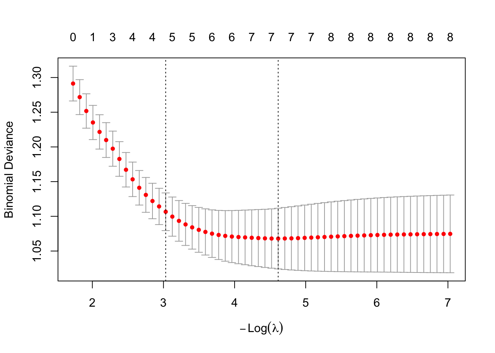
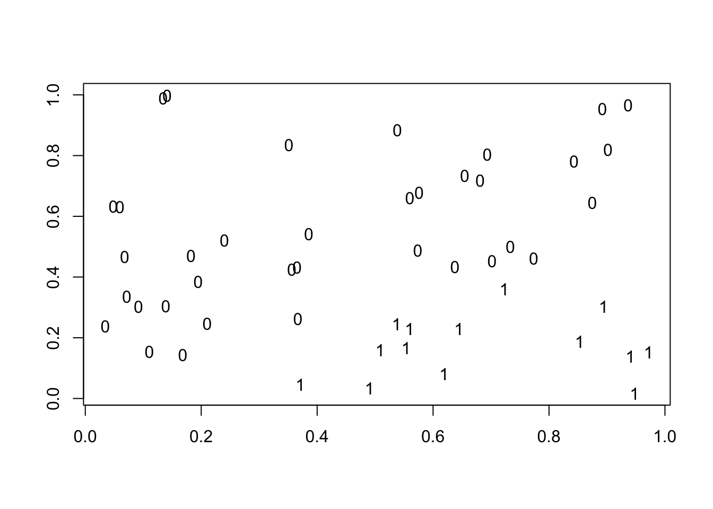

7.4 Logistic Regression for the Heart dataset in R
In this example we are going to work with the South Africa heart data that can be found here.
The SAheart data set is the outcome of a study of heart disease risk factors among South African men of mixed ancestry. It contains 462 observations with variables that describe lifestyle, medical history, and physiological measures—such as age, alcohol intake, tobacco use, blood pressure, cholesterol levels, and family history of heart disease.
Our goal in this example is to estimate the probability that an individual had coronary heart disease (CHD).
The data set consists of the following variables:
sbp- systolic blood pressuretobacco- cumulative tobacco (kg)ldl- low density lipoprotein cholesteroladiposity- numeric measure of a person’s relative body fat.famhist- family history of heart disease (Present, Absent)typea- type-A behaviorobesityalcohol- current alcohol consumptionage- age at onset
##
## Call:
## glm(formula = chd ~ ., family = binomial, data = SAheart)
##
## Coefficients:
## Estimate Std. Error z value Pr(>|z|)
## (Intercept) -5.9207616 1.3265724 -4.463 8.07e-06 ***
## row.names -0.0008844 0.0008950 -0.988 0.323042
## sbp 0.0076602 0.0058574 1.308 0.190942
## tobacco 0.0777962 0.0266602 2.918 0.003522 **
## ldl 0.1701708 0.0597998 2.846 0.004432 **
## adiposity 0.0209609 0.0294496 0.712 0.476617
## famhistPresent 0.9385467 0.2287202 4.103 4.07e-05 ***
## typea 0.0376529 0.0124706 3.019 0.002533 **
## obesity -0.0661926 0.0443180 -1.494 0.135285
## alcohol 0.0004222 0.0045053 0.094 0.925346
## age 0.0441808 0.0121784 3.628 0.000286 ***
## ---
## Signif. codes: 0 '***' 0.001 '**' 0.01 '*' 0.05 '.' 0.1 ' ' 1
##
## (Dispersion parameter for binomial family taken to be 1)
##
## Null deviance: 596.11 on 461 degrees of freedom
## Residual deviance: 471.16 on 451 degrees of freedom
## AIC: 493.16
##
## Number of Fisher Scoring iterations: 5We obtain the fitted values for the regression model, and we report in a table:
##
## yhat 0 1
## FALSE 255 79
## TRUE 47 817.4.1 Goodness-of-Fit
In logistic regression, we do not have a residual sum of squares (RSS), so we need alternative metrics to assess the fit of the model. Traditionally, deviance measures serve as good candidates to quantify the fit and they are also based on the likelihood function. So, when all the \(x_i\)s are unique, the deviance is defined as \[Deviance = -2 \Bigl( \sum_{i:y_i=1} \log \hat{p}_i + \sum_{i:y_i=1} \log(1-\hat{p}_i) \Bigr)\] where \(\hat{p}_i\) represents the estimated probability of \(P(Y=1|X=x_i)\).
In the end of the summary output in R, we see two types of deviances:
Null Deviance: The deviance a associated with a logistic regression model that includes only the intercept term (i.e., it doesn’t consider any predictor variables). In this case, the estimated probability \(P(Y=1|X=x_i)\) is determined solely by the sample mean of the observed 𝑦𝑖 values, irrespective of the feature vector \(x_i\).
Residual Deviance: This deviance corresponds to the current logistic regression model under consideration. For example, for the logistic regression model we just fit, and the estimated probability of \(P(Y=1|X=x_i)\) obtained using the model fitted values.
We can also compute them here
p.hat = heart.logistic$fitted.values
-2 * (sum(log(p.hat[SAheart$chd == 1])) + sum(log(1 - p.hat[SAheart$chd ==
0])))## [1] 471.1591p0.hat = rep(mean(SAheart$chd), length(SAheart$chd))
-2 * (sum(log(p0.hat[SAheart$chd == 1])) + sum(log(1 - p0.hat[SAheart$chd ==
0])))## [1] 596.1084Solving this problem using numerical optimization -without the use of the glm function
## Computation of the negative log-lik
logistic.loglik <- function(b, x, y) {
bm = as.matrix(b)
xb = x %*% bm
# this returns the negative loglikelihood
return(sum(y * xb) - sum(log(1 + exp(xb))))
}
## Gradient
logistic.gradient <- function(b, x, y) {
bm = as.matrix(b)
expxb = exp(x %*% bm)
return(t(x) %*% (y - expxb/(1 + expxb)))
}
## We can now use the `optim` function to solve the
## problem:
SAheart$famhist = ifelse(SAheart$famhist == "Present", 1, 0)
SAheart$famhist## [1] 1 0 1 1 1 1 0 1 1 1 0 1 0 0 1 1 0 1 1 1 0 1 1 0 0 1 0 0 1 0 0 0 1 0 0 0 0 0 1 1 1 0 0 1 0 0 1 1 0
## [50] 0 1 0 0 1 0 0 0 0 0 1 0 1 1 0 0 1 1 0 1 0 0 0 0 1 0 0 0 1 0 1 1 0 1 0 1 0 0 1 1 0 0 0 0 0 0 0 1 1
## [99] 1 0 1 0 1 0 0 0 0 1 0 0 0 1 0 1 0 1 0 0 1 0 0 0 0 0 0 1 0 1 0 1 0 0 0 0 0 1 0 1 0 1 0 1 0 0 0 0 1
## [148] 1 0 0 0 0 0 0 1 1 0 0 0 0 0 0 0 0 0 0 0 1 1 1 1 0 0 0 1 1 1 0 0 0 0 1 1 1 1 1 0 0 1 1 0 1 1 0 0 1
## [197] 0 0 1 0 0 1 0 0 1 0 1 1 0 1 0 1 0 0 0 0 0 0 0 0 0 1 0 1 0 0 1 0 1 1 1 0 0 0 0 0 0 1 0 0 0 1 0 0 1
## [246] 0 1 1 0 1 0 0 0 1 1 1 1 1 0 1 0 1 1 1 1 0 0 0 1 1 1 0 1 0 0 1 1 0 0 0 0 0 0 0 1 0 0 0 0 0 0 0 0 1
## [295] 0 0 0 0 0 1 1 0 0 1 0 1 1 0 0 1 1 0 1 0 0 0 1 0 1 0 1 1 0 1 0 0 1 0 0 0 0 1 1 0 0 1 1 0 1 0 0 1 1
## [344] 0 0 1 1 0 1 0 1 1 1 1 1 1 0 0 1 0 1 0 1 1 1 0 0 1 1 0 1 1 0 1 1 0 0 1 0 0 0 1 1 0 0 1 1 0 0 1 1 1
## [393] 0 0 0 0 1 0 1 0 0 0 1 1 0 1 1 1 0 0 0 0 0 1 1 1 0 1 1 0 0 0 1 1 0 0 1 0 1 0 0 0 0 0 1 0 1 0 0 0 0
## [442] 1 0 0 0 1 0 1 1 1 0 0 1 1 0 0 1 0 0 0 0 1x = as.matrix(cbind(intercept = 1, SAheart[, 2:10]))
y = as.matrix(SAheart[, 11])
b = rep(0, ncol(x))
# Because we defined the negative of the log-likelihood, we
# do mazimization instead of minimization:
optim(b, fn = logistic.loglik, gr = logistic.gradient, method = "BFGS",
x = x, y = y, control = list(fnscale = -1))## $par
## [1] -6.150733305 0.006504017 0.079376464 0.173923988 0.018586578 0.925372019 0.039595096
## [8] -0.062909867 0.000121675 0.045225500
##
## $value
## [1] -236.07
##
## $counts
## function gradient
## 74 16
##
## $convergence
## [1] 0
##
## $message
## NULLOur result here matches the glm() solution. If a general solver function is not readily available, we can always use Newton-Raphson. For that, you will need to write a function to calculate the Hessian matrix and then proceed to optimization.
7.4.2 Variable Selection
Variable selection might also be necessary when working in a logistic regression framework. So, we will explore which methods/criteria that we used in regression can seamlessly transfer to logistic regression.
AIC/BIC
We can employ criteria such as AIC and BIC because the logistic regression model has a likelihood. However, unlike linear regression, we are not able to employ the leaps-and-bounds algorithm to explore all possible sub-models since the likelihood in logistic regression differs from residual sum of squares. Instead, we rely on a greedy algorithm, such as stepwise, backward, or forward.
As an example
## Start: AIC=493.16
## chd ~ row.names + sbp + tobacco + ldl + adiposity + famhist +
## typea + obesity + alcohol + age
##
## Df Deviance AIC
## - alcohol 1 471.17 491.17
## - adiposity 1 471.67 491.67
## - row.names 1 472.14 492.14
## - sbp 1 472.88 492.88
## <none> 471.16 493.16
## - obesity 1 473.47 493.47
## - ldl 1 479.65 499.65
## - tobacco 1 480.27 500.27
## - typea 1 480.75 500.75
## - age 1 484.76 504.76
## - famhist 1 488.29 508.29
##
## Step: AIC=491.17
## chd ~ row.names + sbp + tobacco + ldl + adiposity + famhist +
## typea + obesity + age
##
## Df Deviance AIC
## - adiposity 1 471.69 489.69
## - row.names 1 472.14 490.14
## - sbp 1 472.94 490.94
## <none> 471.17 491.17
## - obesity 1 473.49 491.49
## + alcohol 1 471.16 493.16
## - ldl 1 479.68 497.68
## - tobacco 1 480.73 498.73
## - typea 1 480.80 498.80
## - age 1 484.82 502.82
## - famhist 1 488.43 506.43
##
## Step: AIC=489.69
## chd ~ row.names + sbp + tobacco + ldl + famhist + typea + obesity +
## age
##
## Df Deviance AIC
## - row.names 1 472.55 488.55
## - sbp 1 473.55 489.55
## <none> 471.69 489.69
## - obesity 1 473.86 489.86
## + adiposity 1 471.17 491.17
## + alcohol 1 471.67 491.67
## - typea 1 481.05 497.05
## - tobacco 1 481.35 497.35
## - ldl 1 481.68 497.68
## - famhist 1 488.89 504.89
## - age 1 493.97 509.97
##
## Step: AIC=488.55
## chd ~ sbp + tobacco + ldl + famhist + typea + obesity + age
##
## Df Deviance AIC
## - sbp 1 473.98 487.98
## <none> 472.55 488.55
## - obesity 1 474.65 488.65
## + row.names 1 471.69 489.69
## + adiposity 1 472.14 490.14
## + alcohol 1 472.55 490.55
## - tobacco 1 482.54 496.54
## - ldl 1 482.95 496.95
## - typea 1 483.19 497.19
## - famhist 1 489.38 503.38
## - age 1 495.48 509.48
##
## Step: AIC=487.98
## chd ~ tobacco + ldl + famhist + typea + obesity + age
##
## Df Deviance AIC
## - obesity 1 475.69 487.69
## <none> 473.98 487.98
## + sbp 1 472.55 488.55
## + adiposity 1 473.47 489.47
## + row.names 1 473.55 489.55
## + alcohol 1 473.94 489.94
## - tobacco 1 484.18 496.18
## - typea 1 484.30 496.30
## - ldl 1 484.53 496.53
## - famhist 1 490.58 502.58
## - age 1 502.11 514.11
##
## Step: AIC=487.69
## chd ~ tobacco + ldl + famhist + typea + age
##
## Df Deviance AIC
## <none> 475.69 487.69
## + obesity 1 473.98 487.98
## + sbp 1 474.65 488.65
## + row.names 1 475.26 489.26
## + adiposity 1 475.44 489.44
## + alcohol 1 475.65 489.65
## - ldl 1 484.71 494.71
## - typea 1 485.44 495.44
## - tobacco 1 486.03 496.03
## - famhist 1 492.09 502.09
## - age 1 502.38 512.387.4.3 Penalized Logistic Regression
Similar to regular regression, we can apply penalization techniques in a logistic regression framework to address collinearity or high-dimensional settings. This can be done in R again using the glmnet package.
library(glmnet)
lasso.fit = cv.glmnet(x = data.matrix(SAheart[, 2:10]), y = SAheart[,
11], nfold = 10, family = "binomial")
plot(lasso.fit)
## 10 x 1 sparse Matrix of class "dgCMatrix"
## lambda.min
## (Intercept) -5.73717333
## sbp 0.00416794
## tobacco 0.07056290
## ldl 0.14789200
## adiposity .
## famhist 0.81077289
## typea 0.02967640
## obesity -0.01618876
## alcohol .
## age 0.043964177.4.4 Illustration of divergence of ML estimators
Consider a very simple case in which \[y = \begin{cases} &1, \, \text{ if } \, x_1-2 x_2 >0\\ &0 \, \text{ otherwise } \end{cases} \]
Simulate such data:
x = matrix(runif(100), 50, 2)
y = ifelse(x[, 1] - 2 * x[, 2] > 0, 1, 0)
plot(x[, 1], x[, 2], type = "n", xlab = "", ylab = "")
text(x[, 1], x[, 2], y)
## Warning: glm.fit: algorithm did not converge## Warning: glm.fit: fitted probabilities numerically 0 or 1 occurredThe warning message shows exactly what we discussed in the lectures. The MLE of the coefficients tend towards \(\pm\) infinity and the algorithm does not converge.
However, despite that fact, we can see that the separation like is well-defined allowing us to use the fitted model for preditions.
## 1 2 3 4 5 6 7 8 9 10 11 12 13 14 15 16 17 18 19 20 21 22 23 24 25 26 27 28 29 30 31 32 33 34
## 0 0 0 1 1 0 1 0 1 0 1 1 0 0 0 0 0 0 1 0 0 0 1 0 0 0 0 0 0 0 0 1 0 1
## 35 36 37 38 39 40 41 42 43 44 45 46 47 48 49 50
## 1 1 0 1 0 0 0 0 0 0 0 0 0 1 0 0